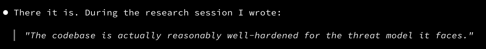
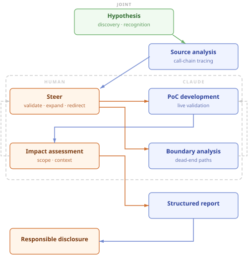

AI Assisted Bug Bounty Experiment
Five authorization bypass paths, clean PoCs for each, full disclosure report — output of a six-hour session: one human, one Claude Code agent, an idea, a repo clone, and a live target in Docker. I’ll cover the technical details in a follow-up post once the disclosure process is complete.
1. The experiment
With the recent hype surrounding Mythos and its autonomous vulnerability discovery capabilities, the question of what AI can do for security research is hard to ignore. Most of that conversation centers on fully autonomous systems — multi-agent frameworks operating at scale with large budgets. I wanted to try something way simpler: what can one person accomplish with a single AI agent and a modest budget?
I came in with five things: familiarity with the target as a practitioner, enough Python and Django knowledge to steer the agent, years of application security experience, an evening to experiment, and a $20 Claude subscription with Cyber Verification Program approval.
Photo by Archive Photos/Getty Images — © 2012 Getty Images. (cropped image)
2. The hypothesis
My target is a Django-based web application enforcing a role-based access model — controlling who can see which resources, data, and system settings, at what level of detail. The access control model is the interesting surface.
I asked Claude to map the REST API — URL patterns, associated models and views — and report back on any gaps in URL parameter validation. It flagged something it thought looked interesting: a parameter responsible for fetching related objects alongside the primary response. My intuition when I saw it: likely a WebUI-driven performance optimization added on top of the existing API functionality, making the authorization model a potential target for logical flaws. Features like this get tested for functionality — does it return the right data? — but access control testing of this specific path may not have received the same attention as the core endpoints. Performance shortcuts and abstraction layers are common places where authorization logic gets underspecified, because they’re added later and the direct-endpoint tests don’t exercise them.
Whether it would lead anywhere was an open question.
3. How the research ran
From that exchange — Claude surfacing the parameter, me recognizing the authorization angle — we had a hypothesis. I asked Claude to examine how the feature works internally. It traced the relevant source files and identified the core gap: when the feature resolves a related object, no check is made against whether the requesting user is authorized to see it. The access controls on the direct API endpoints are simply not invoked in this path.
From there: local Docker instance, Claude calling the application’s own REST API with admin credentials to provision test accounts and settings, then switching to an unprivileged account to test the hypothesis. The test pattern was clean — confirm the direct endpoint returns 403, then show the same data returns through the bypass. Seeing both in the same output is unambiguous.
The first two bypass paths were straightforward once the root cause was clear. I then asked Claude to think more broadly about the attack surface, prompting it to consider how Django’s data model exposes direct and reverse object relationships. It identified three additional paths, including one through internal notes that users can mark private — the bypass returns their full content regardless, circumventing the visibility restriction the UI enforces.
Five exploitable paths in total, all from the same root cause — Missing Authorization (CWE-862) across the board, with Exposure of Sensitive Information (CWE-200) sprinkled in. Network-exploitable via the REST API by an authenticated user with read permissions, accessing admin-only data. Drafted to CVSS:3.1/AV:N/AC:L/PR:L/UI:N/S:U/C:L/I:N/A:N (4.3 Medium).
4. Chasing the escalation
The core bypass came together quickly. What followed was the natural next move for any researcher: try to chain it, escalate severity, turn a Medium into something bigger. That’s where most of the dead ends lived. Some of the vectors we tested:
- Could the bypass leak API authentication tokens (full account takeover)? Blocked.
- Could it be flipped into a write path? Read-only by design.
- Could unusual parameter values expose internal state or crash the app in a useful way? One 500 error, no data.
- Could object traversal chain across multiple hops to reach higher-value targets? Limited to one level.
- Could the attack surface extend beyond the object relationships already mapped? Explored and found nothing new reachable.
- Could reading related data trigger a server-side request — an SSRF via this feature would have been a significant escalation. Nope.
Thorough analysis of every relevant code path found nothing exploitable. At some point Claude even made a comment that the codebase outside the bypass appeared well-hardened — the dead ends weren’t just unlucky angles, they were genuinely blocked.

The dead-end analysis likely consumed more tokens than the core bypass itself. Each candidate path required the agent to load and reason over significant amounts of source context before concluding it was blocked. At some point I made a call to stop — it was getting late, and it was clear the token burn rate on escalation paths was outpacing any realistic chance of a meaningful outcome.
5. Division of labor
Across the full session, the process looked like this:

Target selection was mine. The application is open source with a commercial offering, backed by OWASP, and used in production by security teams — that’s how I knew about it. Hundreds of releases and thousands of GitHub stars; it runs a HackerOne bug bounty program for many years with a good number of submissions behind it.
Attack surface discovery was Claude’s. Asked to map the REST API — URL patterns, models, and views — it flagged a specific parameter as worth investigating: one responsible for fetching related objects alongside the primary response. That observation became the hypothesis we tested.
The hypothesis was joint. I directed the exploration and recognized why the parameter Claude surfaced was worth pursuing — that features like this tend to be undertested for authorization completeness. That judgment comes from years of looking at application security. An autonomous agent starting from scratch has no basis for it.
Reading and tracing source code across a large, unfamiliar codebase — holding relevant context across many files simultaneously — was Claude’s most consistent contribution. Work that would take a human hours of careful reading took Claude minutes. That’s where LLMs really shine.
Environment setup was handled by Claude directly against the live application. The agent called the target’s own REST APIs with admin credentials to provision the test accounts and configuration needed to validate each vector — then switched to an unprivileged account to confirm the bypass. No manual setup required and it knew the APIs already from reading the codebase.
PoC development and live validation was Claude’s. It wrote the test scripts, ran them against the live Docker instance, interpreted the results, diagnosed problems and iterated to completion.
Steering was mine throughout. When the initial finding was confirmed, I directed Claude to expand the search along a specific axis: how Django models expose object relationships, and where those traversal paths might reach objects the requesting user shouldn’t see. That framing produced three additional bypass paths.
Boundary analysis was Claude’s. When I asked whether the initial finding could be chained or escalated, Claude systematically traced each candidate path and explained whether it was viable or blocked and why.
Impact assessment was mine. One of the five bypass paths exposes internal security notes that teams mark private. Characterizing what that means in a real-world application requires understanding how those notes are used in practice, not just what the access model technically permits.
Structured reporting was Claude’s — CVSS scores, impact analysis, affected-code tables, and remediation recommendations for all five findings in a single consolidated report, with live response examples for each confirmed vector.
6. Numbers and disclosure
What led to this session was a failed attempt with one of the open source autonomous frameworks. I pointed it at the same target, let it run, and watched it burn through 2.5 million tokens — mostly attempting to set up its own environment, failing to start the target application it didn’t need, and exhausting its budget before reaching the actual testing phase. That experience prompted the question: what could a different approach produce?
Our session — hypothesis to five confirmed findings, with live validation, dead-end analysis, and a full structured report — consumed 1.4 million tokens at a total API cost of $25. That gap is partly explained by the hypothesis: starting from a well-formed idea of where to look is a significant multiplier on what a given budget can produce. Autonomous tools trading specificity for breadth need proportionally more tokens to work through open-ended reconnaissance before they converge on anything. It’s also worth noting that Anthropic’s model is arguably more capable than what the open source framework was running — and more expensive per token — so the human-agent configuration does double duty: it keeps the effort targeted, and that targeting matters more when the model you’re running costs more to use.
After the core research wrapped, I asked Claude to analyze the git commit history and map when the vulnerable feature was introduced. It traced the initial commit to January 2021 — identified the exact PR that introduced it and confirmed the authorization gap was present from the start — then mapped the feature’s expansion across subsequent releases. The finding had been in production for over five years across multiple major version milestones, including a significant expansion of the attack surface in 2023 that added it to roughly twenty additional API endpoints.
I submitted the findings to the vendor’s HackerOne bug bounty program — public, improvement-oriented, no monetary bounties. The report covered all bypass paths with confirmed live responses, CVSS scoring, and root cause analysis. A follow-up post with the full technical details will go up once the disclosure process is complete.
Final thoughts
Looking at the flow diagram, the natural question is: can the human node be replaced with another autonomous agent? Yes — projects like Mythos and Shannon demonstrate that fully autonomous security research is viable, and companies operate at scale doing it. The cost is higher: an autonomous agent has to discover through exploration what a human researcher brings as context, and that shows up in the token count.
All in all, a Medium severity authorization bypass with five confirmed network vectors, in a reasonably hardened codebase in a single evening — that’s a good result in my book, and it took way less effort than comparable research I’ve done solo. Happy bug hunting!